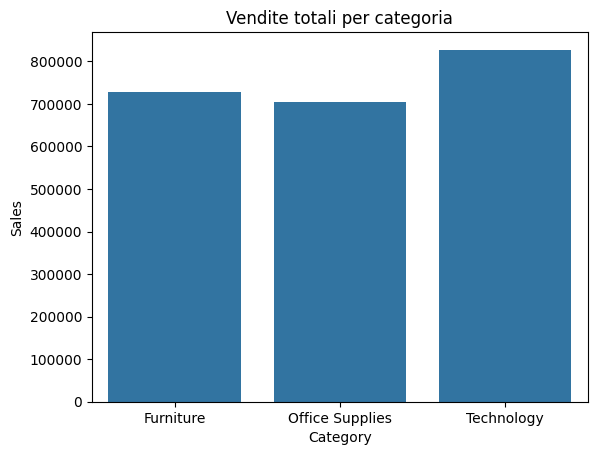
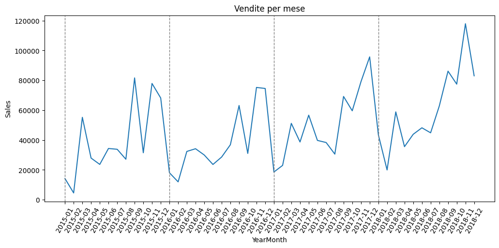

In questo progetto ho condotto un'analisi approfondita sulle vendite di un superstore (dataset disponibile su Kaggle). Ho combinato tecniche di analisi esplorativa dei dati (EDA) per catturare eventuali pattern tra la clientela e modelli predittivi di time series forecasting per modellare l'andamento delle vendite nel tempo e fare previsioni su trend e stagionalità.
Ho iniziato individuandoo la categoria di prodotti che ha generato piu ricavi, ovvero il comparto tecnologia, sebbene rimanga un certo equilibrio tra le categorie. La categoria Ufficio è quella che invece genera piu ordini e traffico, molto al di sopra delle altre. Già questo è un punto interessante per la gestione dei materiali.
Per le sotto-categorie otteniamo questo risultato:
| Sub-Category | Sales | N_sales |
|---|---|---|
| Binders | 134.067550 | 1492 |
| Paper | 57.420257 | 1338 |
| Furnishings | 95.823865 | 931 |
| Phones | 374.180877 | 876 |
| Storage | 263.633885 | 832 |
| Art | 34.019631 | 785 |
| Accessories | 217.178175 | 756 |
| Chairs | 531.833165 | 607 |
| Appliances | 227.926804 | 459 |
| Labels | 34.587468 | 357 |
| Tables | 645.893720 | 314 |
| Envelopes | 65.032444 | 248 |
| Bookcases | 503.598224 | 226 |
| Fasteners | 14.027850 | 214 |
| Supplies | 252.284283 | 184 |
| Machines | 1645.553313 | 115 |
| Copiers | 2215.880212 | 66 |
I raccoglitori (binders) sono il prodotto piu ordinato seguito dalla carta, come si poteva intuire facendo parte della categoria ufficio. Le Stampanti (copiers) e altri oggetti simili invece sono quelli che generano più ricavi pur essendo tra i prodotti meno ordinati. Segmentando la clientela, troviamo che la categoria ufficio rimane la più frequente per tutti e lo stesso per i metodi di spedizione utilizzati. In particolare, il segmento Corporate mostra una minore propensione all'utilizzo del servizio Same Day, suggerendo possibili opportunità di ottimizzazione del servizio.
| Segment | Standard | First Class | Second Class | Same Day |
|---|---|---|---|---|
| Consumer | 59.42 | 14.80 | 19.66 | 6.12 |
| Corporate | 60.35 | 15.85 | 19.95 | 3.86 |
| Home Office | 59.91 | 15.92 | 17.75 | 6.41 |
Facendo un test ANOVA sulle vendite distinte per segmento controlliamo se in media ci sono differenze. H0 ipotesi nulla -> le medie sono uguali H1 ipotesi test -> le medie sono differenti l'output è: ANOVA tra segmenti: F=0.59, p=0.5558 p risulta ben superiore il limite s di 0.05 quindi non risultano differenze statisticamente significative.
Ho identificato e analizzato i clienti "premium" (con vendite superiori a $10,000), rivelando un interessante pattern: alcuni dei maggiori contributori al fatturato (in particolare SM-20320 e TC-20980) hanno raggiunto questi volumi principalmente
attraverso ordini una tantum di grande entità, piuttosto che attraverso acquisti regolari.
In rosso è segnata la media della spesa storica di ciascun cliente.
Per prima cosa osserviamo l'andamento delle vendite mensili per capire che tipo di andamento ha:
Notiamo un'andatura stagionale marcata con un lieve trend in crescita.
Durante l'anno avvengono due picchi regolarmente ad agosto e a novembre mentre tra dicembre e gennaio abbiamo i livelli più bassi di vendite.
Ora testiamo un modello sarima sui dati disponibili e vediamo come si comporta.
Il modello si adatta bene sia al trend che alla stagionalità dato che la serie stessa mostra un andamento regolare.
Per scopo dimostrativo useremo tre diversi modelli statistici per prevedere i 12 mesi successivi ai dati disponibili:
Questo approccio permette di capire se ci sono tratti di una serie che un modello riesce a catturare meglio di altri. In questo caso la serie è regolare quindi ci aspettiamo che tutti e tre i modelli si comportino bene sia in trend che stagionalità.

Ho utilizzato un orizzonte di previsione di 12 mesi, implementando:
# Visualizzazione intervalli di confidenza
import matplotlib.pyplot as plt
plt.figure(figsize=(10,5))
plt.plot(df['Date'], df['Sales'], label='Vendite reali')
plt.plot(forecast.index, forecast['yhat'], label='Previsioni')
plt.fill_between(forecast.index, forecast['yhat_lower'], forecast['yhat_upper'], color='gray', alpha=0.3)
plt.legend()
plt.show()L'analisi ha fornito insights actionable per l'ottimizzazione delle strategie di vendita e ha dimostrato l'efficacia di un approccio data-driven nel prevedere i trend futuri. L'utilizzo di tecniche statistiche avanzate combinate con una solida analisi esplorativa ha permesso di costruire un quadro completo e affidabile del business.